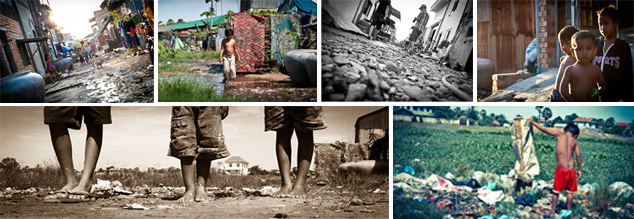
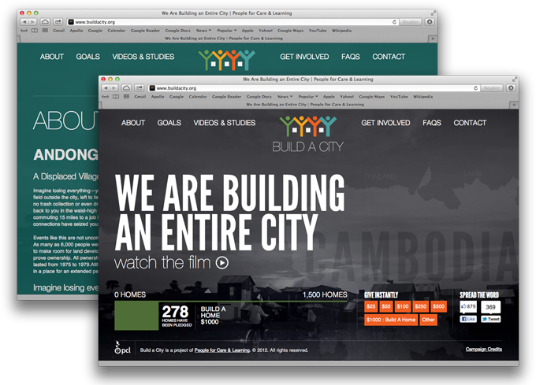

We're building 1,500 homes in Southeastern Cambodia.
Challenge
The Build A City campaign is a concentrated effort to break the poverty cycle in Andong, Kondong Kaw, Cambodia--a displaced village home to more than 6,000 people. With support of the Cambodian government and a dedicated non-profit, People For Care & Learning, the Build A City campaign is an indigenous effort emphasizing education and economy. Currently, Build A City is raising funds to build 1,500 homes for the people in Andong Village.
Video produced by Between Pixels.
In October 2011, People For Care & Learning commissioned Between Pixels and Whiteboard to collaborate on the Build A City campaign. We traveled to Cambodia for a ten-day excursion to begin building the campaign framework.

Solution
Whiteboard commissioned Robbie de Villiers to conceptualize and illustrate an identity for the campaign. Our team designed a high-impact web platform using HTML5 elements such as a video background that is focused on the film about the project and provides simple pathways for participants to give and raise awareness. We continue to work with People For Care & Learning on campaign strategies and other collateral.